Honda
NSX '92
O Honda NSX surgiu com uma audaciosa missão de engenharia: provar que um supercarro com motor central podia oferecer um desempenho avassalador sem abdicar da fiabilidade diária e do conforto ergonómico. Com carroçaria e suspensão revolucionárias construídas inteiramente em alumínio leve e um motor V6 VTEC, a sua dinâmica de condução de precisão cirúrgica foi afinada pelo campeão do mundo de Fórmula 1, Ayrton Senna, forçando rivais estabelecidos como a Ferrari a repensar os seus projetos.
Especificações Técnicas:
• Motor: 3.0L V6 VTEC Atmosférico
• Potência: 274 cv
• Peso: 1350 kg
• Relação Potência/Peso: 0.20 cv/kg (4.92 kg/cv)
• Velocidade Máxima: 270 km/h
• 0-100 km/h: 5.5 segundos
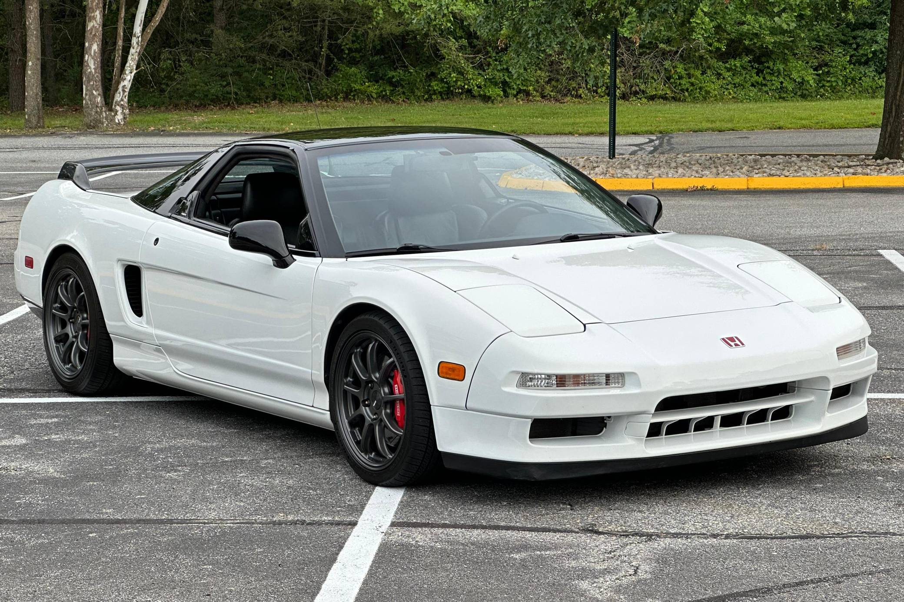
Lexus
LFA
O Lexus LFA foi um projeto de obsessão absoluta levado a cabo pela Toyota ao longo de dez anos. Projetado sem olhar a custos, o carro teve a sua carroçaria toda refeita a meio do desenvolvimento para adotar polímero reforçado com fibra de carbono. Equipado com um motor V10 atmosférico que sobe de rotações tão rápido que exige um painel digital obrigatório (os analógicos não acompanhavam), o seu som de escape afinado pela divisão musical da Yamaha assemelha-se a um carro clássico de Fórmula 1.
Especificações Técnicas:
• Motor: 4.8L V10 Atmosférico
• Potência: 560 cv
• Peso: 1480 kg
• Relação Potência/Peso: 0.37 cv/kg (2.64 kg/cv)
• Velocidade Máxima: 325 km/h
• 0-100 km/h: 3.7 segundos
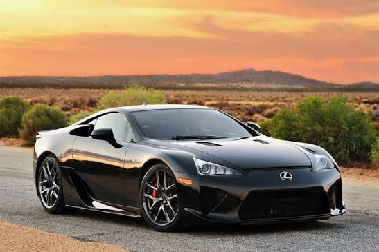
Mazda
787B
O Mazda 787B alcançou o estatuto de mito absoluto ao vencer as lendárias 24 Horas de Le Mans em 1991. Ele desafiou toda a ordem estabelecida dos motores tradicionais de pistões ao utilizar um motor rotativo Wankel de quatro rotores. Pintado com o seu icónico esquema de cores laranja e verde da Charge, o som estridente de alta rotação e a fiabilidade mecânica esmagadora garantiram a primeira e única vitória de um carro com motor sem pistões na clássica prova francesa.
Especificações Técnicas:
• Motor: R26B 2.6L Quatro Rotores Wankel
• Potência: 700 cv
• Peso: 830 kg
• Relação Potência/Peso: 0.84 cv/kg (1.18 kg/cv)
• Velocidade Máxima: 344 km/h
• 0-100 km/h: Aprox. 3.0 segundos
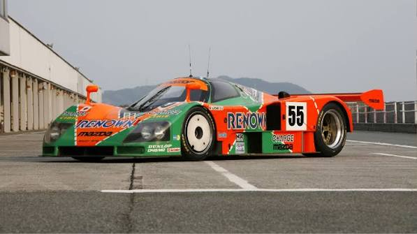
Mazda
RX-7 (FC/FD)
As gerações FC e FD do Mazda RX-7 representam a era de ouro da linhagem desportiva nipónica. Notabilizaram-se pela aplicação de motores com tecnologia rotativa Wankel com turbocompressores sequenciais sofisticados, alcançando uma distribuição de massas de 50:50 perfeita e um centro de gravidade ultrabaixo. As suas linhas intemporais e agilidade extrema cimentaram estes carros como ícones indissociáveis da cena de corridas das passagens de montanha (Touge) e do drift mundial.
Especificações Técnicas:
• Motor: 1.3L 13B-REW Bi-Turbo Dois Rotores (FD)
• Potência: 280 cv
• Peso: 1280 kg
• Relação Potência/Peso: 0.21 cv/kg (4.57 kg/cv)
• Velocidade Máxima: 256 km/h
• 0-100 km/h: 5.1 segundos
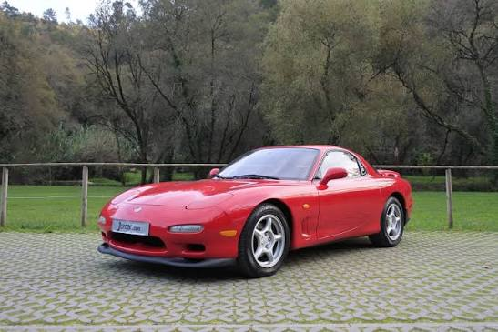
Mitsubishi
Lancer Evolution III
Lançado em 1995, o Lancer Evolution III foi desenhado puramente com o foco na homologação para os ralis do Grupo A da FIA. A Mitsubishi atualizou a aerodinâmica com um spoiler dianteiro de maiores dimensões e uma asa traseira marcante para gerar carga aerodinâmica eficiente. Com um sistema lendário de tração integral permanente e o robusto motor 4G63, levou o piloto Tommi Mäkinen ao domínio absoluto dos troços de terra do WRC.
Especificações Técnicas:
• Motor: 2.0L 4G63 Turbo de 4 cilindros
• Potência: 270 cv
• Peso: 1260 kg
• Relação Potência/Peso: 0.21 cv/kg (4.66 kg/cv)
• Velocidade Máxima: 240 km/h
• 0-100 km/h: 4.9 segundos
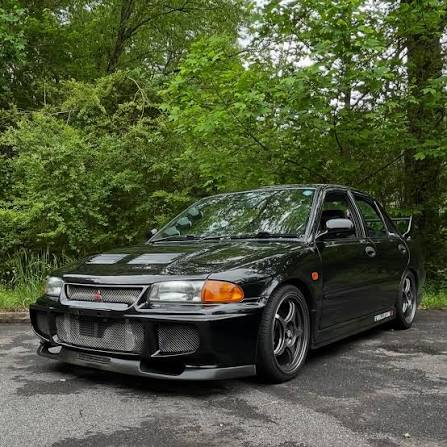
Nissan
Fairlady 240Z
O Fairlady 240Z (conhecido no mercado ocidental como Datsun 240Z) revolucionou o conceito global de carros desportivos nos anos 70 ao oferecer um design arrebatador e motor de seis cilindros em linha por uma fração do preço dos exóticos rivais europeus. Ganhou uma reputação indestrutível devido ao seu comportamento mecânico dinâmico e direto, servindo também de base para a lenda urbana do "Devil Z" no famoso folclore underground das autoestradas de Tóquio.
Especificações Técnicas:
• Motor: 2.4L L24 de 6 cilindros em linha
• Potência: 151 cv
• Peso: 1025 kg
• Relação Potência/Peso: 0.14 cv/kg (6.78 kg/cv)
• Velocidade Máxima: 201 km/h
• 0-100 km/h: 8.0 segundos
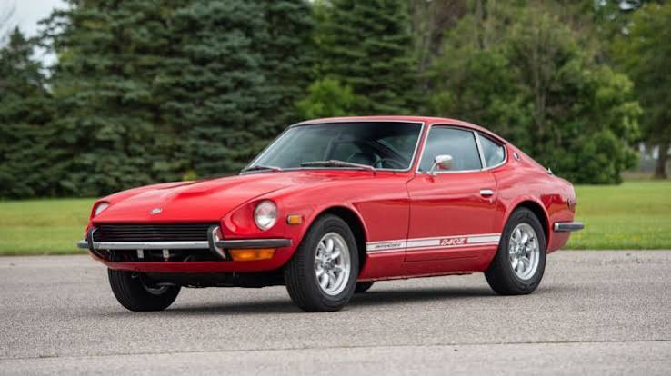
Nissan
Silvia
O Nissan Silvia (particularmente nas plataformas S13, S14 e S15) consolidou-se como a ferramenta definitiva da cultura mundial de drift. O segredo do seu sucesso reside num chassis ligeiro extraordinariamente equilibrado com tração traseira e na vasta capacidade de modificação do motor turbo SR20DET. Tornou-se um ícone insubstituível na cultura urbana automóvel, associado ao controlo preciso de derrapagens controladas.
Especificações Técnicas:
• Motor: 2.0L SR20DET Turbo de 4 cilindros (S15)
• Potência: 250 cv
• Peso: 1240 kg
• Relação Potência/Peso: 0.20 cv/kg (4.96 kg/cv)
• Velocidade Máxima: 245 km/h
• 0-100 km/h: 5.6 segundos
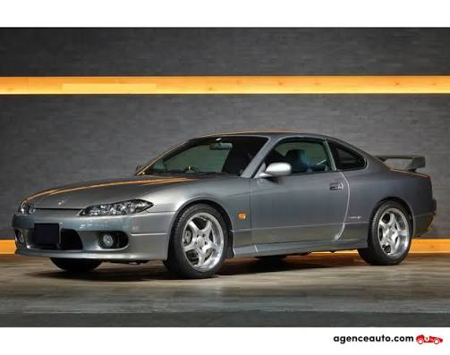
Nissan
Skyline GT-R R34
Apelidado de "Godzilla" devido ao seu domínio avassalador em competições, o Skyline GT-R R34 representa o auge tecnológico analógico japonês dos anos 90. Equipado com o indestrutível motor RB26DETT e o sistema avançado de tração integral ATTESA E-TS, foi um dos pioneiros na introdução de um ecrã LCD central computadorizado que exibia dados telemétricos em tempo real, tornando-se num herói global do cinema e simuladores virtuais.
Especificações Técnicas:
• Motor: 2.6L RB26DETT Bi-Turbo de 6 cilindros em linha
• Potência: 280 cv (declarados oficialmente / reais acima de 320 cv)
• Peso: 1560 kg
• Relação Potência/Peso: 0.17 cv/kg (5.57 kg/cv)
• Velocidade Máxima: 250 km/h (limitada eletronicamente)
• 0-100 km/h: 4.9 segundos
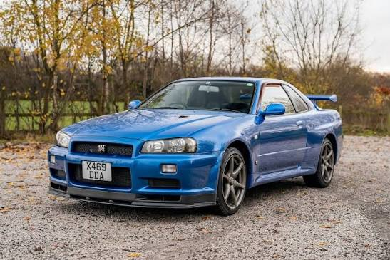
Subaru
BRZ
Desenvolvido em parceria conjunta com a Toyota, o Subaru BRZ surgiu para resgatar a essência pura dos carros desportivos tradicionais do passado: peso pluma, tração traseira, pneus de aderência controlada e um motor atmosférico linear. Ao utilizar a arquitetura única do motor Boxer de cilindros contrapostos, conseguiu obter um dos centros de gravidade mais baixos da indústria mundial automóvel moderna.
Especificações Técnicas:
• Motor: 2.0L Boxer Atmosférico de 4 cilindros
• Potência: 200 cv
• Peso: 1239 kg
• Relação Potência/Peso: 0.16 cv/kg (6.19 kg/cv)
• Velocidade Máxima: 226 km/h
• 0-100 km/h: 7.6 segundos
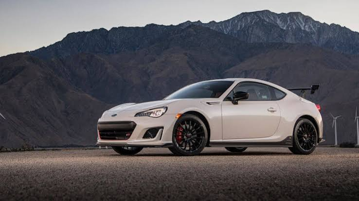
Toyota
2000GT
Lançado em 1967, o Toyota 2000GT foi a declaração definitiva da indústria japonesa de que sabia construir carros requintados com os padrões mais altos do planeta. Desenvolvido em estreita colaboração com a Yamaha, este belíssimo cupê com linhas inspiradas em modelos clássicos europeus provou ao ocidente que o Japão podia rivalizar com o design estético de prestígio das marcas do velho continente.
Especificações Técnicas:
• Motor: 2.0L de 6 cilindros em linha
• Potência: 150 cv
• Peso: 1120 kg
• Relação Potência/Peso: 0.13 cv/kg (7.46 kg/cv)
• Velocidade Máxima: 217 km/h
• 0-100 km/h: 8.6 segundos
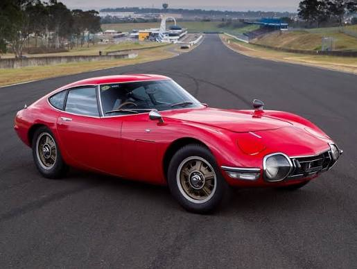
Toyota
AE86 Trueno
O Toyota Sprinter Trueno AE86 (conhecido carinhosamente como "Hachi-Roku") é o derradeiro embaixador da simplicidade automóvel. Um carro leve, com tração traseira e um motor 4A-GE multiválvulas atmosférico de resposta imediata ao pedal. Tornou-se na lenda máxima das montanhas japonesas e a fundação técnica do drift moderno nas mãos de Keiichi Tsuchiya, bem como na banda desenhada Initial D.
Especificações Técnicas:
• Motor: 1.6L 4A-GE DOHC de 4 cilindros
• Potência: 124 cv
• Peso: 970 kg
• Relação Potência/Peso: 0.12 cv/kg (7.82 kg/cv)
• Velocidade Máxima: 196 km/h
• 0-100 km/h: 8.5 segundos
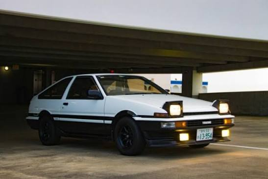
Toyota
Supra MK4
O Toyota Supra MK4 alcançou o estatuto de mito inquestionável devido ao seu coração de ferro: o motor 2JZ-GTE. Desenvolvido durante os anos dourados da economia de bolha do Japão, o bloco foi sobredimensionado pela fábrica a um nível tão extremo que permitiu a preparadores extrair facilmente potências absurdas. Juntando as linhas fluidas com a enorme asa traseira de fábrica, tornou-se o maior ícone global da cultura JDM da era digital.
Especificações Técnicas:
• Motor: 3.0L 2JZ-GTE Bi-Turbo de 6 cilindros em linha
• Potência: 280 cv (oficiais) / Reais cerca de 325 cv de origem
• Peso: 1550 kg
• Relação Potência/Peso: 0.21 cv/kg (4.76 kg/cv)
• Velocidade Máxima: 250 km/h (limitada) / 285 km/h sem limitador
• 0-100 km/h: 4.6 segundos
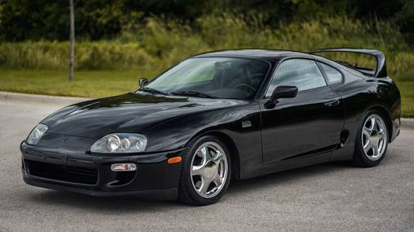